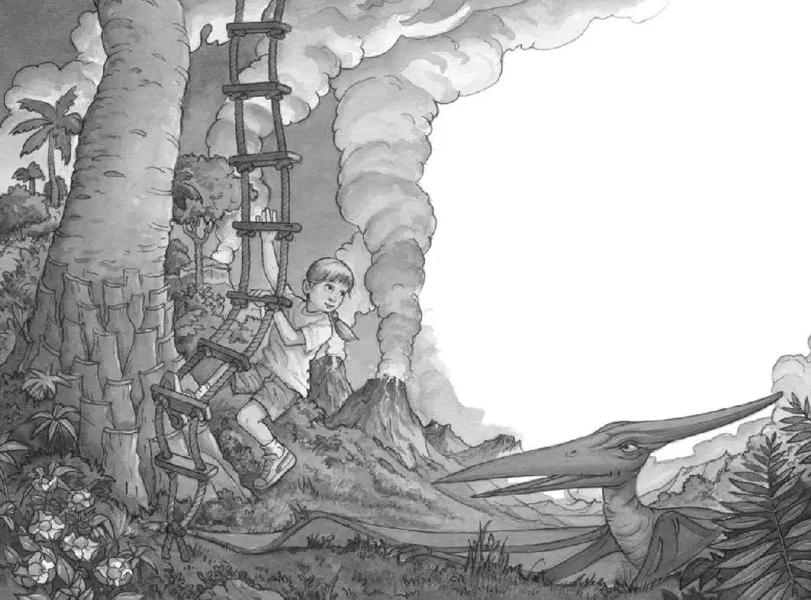

Jack opened his eyes. Sunlight slanted through the window.
The tree house was still high up in a tree.
But it wasn’t the same tree.
“Where are we?” said Annie. She and Jack looked out the window.
The Pteranodon was soaring through the sky. The ground was covered with ferns and tall grass. There was a winding stream, a sloping hill, and volcanoes in the distance.
“I—I don’t know where we are,” said Jack.
The Pteranodon glided down to the base of the tree. It landed on the ground and stood very still.
“So what just happened to us?” said Annie.
“Well…,” said Jack. “I was looking at the picture in the book—”
“And you said, ‘Wow, I wish we could go to the time of Pteranodons,’ ” said Annie.
“Yeah. And then we saw a Pteranodon in the Frog Creek woods,” said Jack.
“Yeah. And then the wind got loud. And the tree house started spinning,” said Annie.
“And we landed here,” said Jack.
“And we landed here,” said Annie.
“So that means…,” said Jack.
“So that means…what?” said Annie.
“I don’t know,” said Jack. He shook his head. “None of this can be real.”
Annie looked out the window again. “But he’s real,” she said. “He’s very real.”
Jack looked out the window with her again. The Pteranodon was standing at the base of the tree like a guard. His giant wings were spread out on either side of him.
“Hi!” Annie shouted.
“Shhh!” said Jack. “We’re not supposed to be here.”
“But where is here?” said Annie.
“I don’t know,” said Jack.
“Hi! Who are you?” Annie called to the Pteranodon.
The creature just looked up at her.
“Are you nuts? He can’t talk,” said Jack. “But maybe the book can tell us.”
Jack looked down at the book. He read the words under the picture:
This flying reptile lived in the Cretaceous Period. It vanished 65 million years ago with the dinosaurs.

“That’s impossible!” said Jack. “We can’t have gone to a time sixty-five million years ago!”
“Jack,” said Annie. “He’s nice.”
“Nice?” said Jack.
“Yeah, I can tell,” said Annie. “Let’s go down to him.”
“Go down?” said Jack.
Annie started down the rope ladder.
“Hey, come back,” said Jack.
But Annie kept going.
“Annie, wait!” Jack called.
Annie dropped to the ground. She stepped boldly up to the ancient creature.